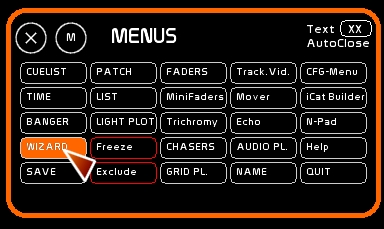
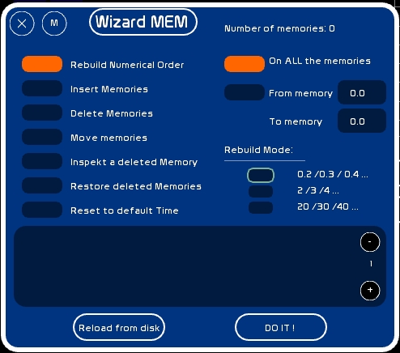
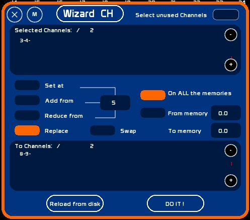

Click [Wizard]

Wizard enables you to manipulate blocks of memories or the entire show.
Wizard has two modes:
Wizard enables you to work on a series of memories with a simple click.
Wizard CH:
Wizard MEM:
To change the Wizard Mode, just click on the Box [Wizard Mem]/[Wizard Ch.]
Wizard works in 2 ways:
Once in the action mode after the parameters have been entered, you have to click [DO IT !]
Changes done on the show are done in RAM.
In case of error, if you didn't record after changes:
Except for deleted memories, if you have saved the show after modifications, you can't go back to its previous state.
So, it is recommended, before using the Wizard, to record a special back-up, using [SAVE] under another name: mybackupjuly15th, for ex. Wizard actions are done in RAM, and when you quit White Cat, they will be recorded in the folder last_save. See Save to understand the Saving structure in White Cat.

| Mode Wizard | Complementary input |
| Rebuild numerical Order | By memory DOT/WHOLE NUMBER/TENS |
| Insert Memories | Number of memories to insert from the specified position |
| Delete Memories | (will remove those memories from CueList) |
| Move Memories | To the desired position indicated by [Move To] |
| Inspect a deleted Memory | Show the content of the indicated memory |
| Restore deleted Memories | ( re-insert deleted memories in the CueList) |
| Reset to default Time | (set by default the time indicated in [CFG_MENU] > General |
Deleting a memory in White Cat removes it from the CueList. If no other operations altering the order of memories is done (recording it again, displacements of memories, clearing of memories, inserting memories before), you can easily reload it.

Wizard Ch doesn't manipulate memories, but channels in memories.
To load channels to modify:
! [ + ] and [ - ] in this window enable you to navigate in the selection rows if you have many channels selected.
| Mode Wizard | Description |
| Set At | Set selected channels at the specified value |
| Added from | Add to selected channels (if they are > to 0) the specified value |
| Reduced from | Reduce from the selected channels (if they are > to 0) the specified value |
| Replace | Enables you to give to target channels the values of the selected channel. Selected channels will be set to 0. |
| Swap | Enables you to exchange the levels of the Selected channels for the levels of the Replacement channels |
In the event that the number of select/replace channels is not the same, the last input level will be assigned to the rest of the replacement selection:
[Swap] works from channel to channel. There should be EXACTLY the same number of channels in the Selected Box as are in the Swap box.